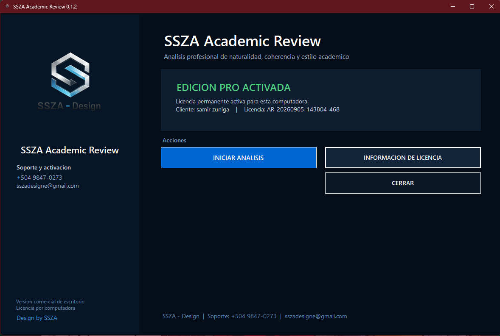
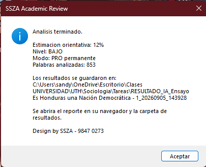
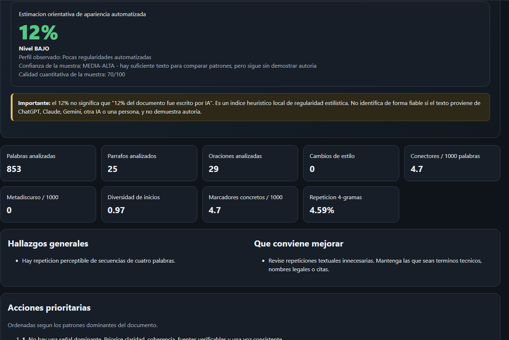
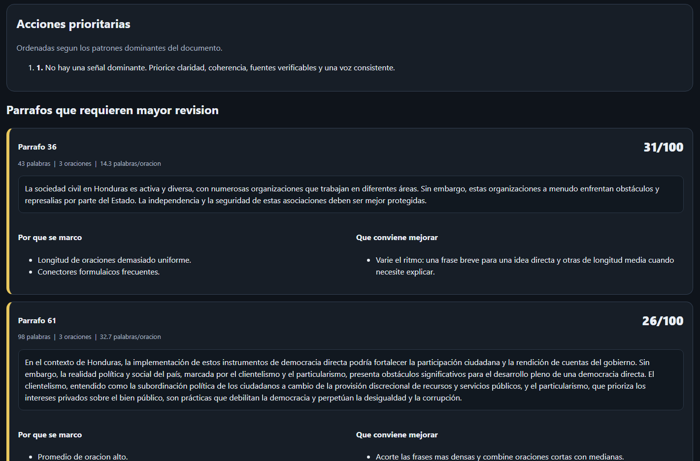
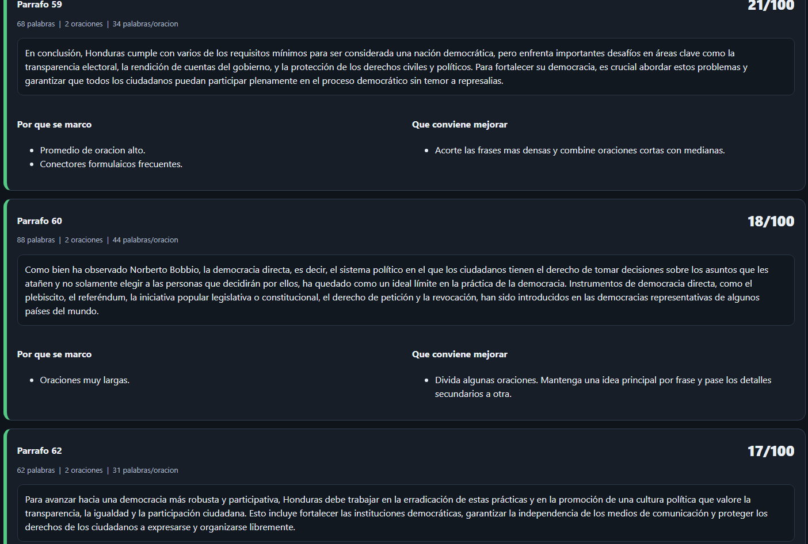

¶
Análisis por párrafos
Localiza párrafos con estructuras demasiado uniformes, repetitivas o formulaicas.
Analiza coherencia, naturalidad, ritmo, repetición y patrones de redacción. Obtén un índice heurístico orientativo y recomendaciones concretas por párrafo.
Selecciona tu documento y obtén un reporte detallado de patrones de escritura.
SSZA Academic Review combina múltiples señales de estilo para ayudarte a localizar las partes del documento que merecen una revisión más cuidadosa.
Localiza párrafos con estructuras demasiado uniformes, repetitivas o formulaicas.
Evalúa longitud de oraciones, diversidad de inicios y regularidad del estilo.
Recibe acciones prioritarias y observaciones concretas para mejorar el documento.
Considera patrones propios de textos normativos y jurídicos para evitar lecturas simplistas.
El motor de análisis trabaja en tu computadora; el documento no necesita subirse a un servidor.
Genera reportes HTML y datos de apoyo para revisar el resultado de manera ordenada.





Obtén la versión más reciente desde el repositorio oficial.
Ejecuta el análisis directamente desde Windows.
Consulta el índice, los párrafos destacados y las recomendaciones.
Para probar la herramienta.
Pago único · 1 PC
Sin mensualidades. La activación PRO queda vinculada a una computadora.
El porcentaje generado es un índice heurístico basado en patrones de escritura. No constituye una prueba definitiva de autoría ni puede determinar de forma concluyente si un texto fue escrito por una persona o por un modelo específico de inteligencia artificial.
No. La edición FREE incluye 3 análisis completos.
El análisis heurístico incluido está diseñado para ejecutarse localmente en tu computadora.
No. Es una estimación orientativa basada en regularidades de escritura y debe utilizarse como apoyo de revisión.
No. El precio es de $19.99 USD, pago único, para una computadora.
WhatsApp +504 9847-0273 o sszadesigne@gmail.com.
Descarga la versión oficial para Windows desde GitHub.